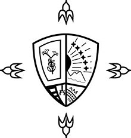

Formación Académica
| Nivel Académico | Institución | Año | Logo |
|---|---|---|---|
| Educación Parvularia (Preescolar) | Colegio Ruiseñor | 2002-2006 | |
| Educación Básica | Colegio Ruiseñor | 2007-2013 | |
| Educación Básica | Colegio Externado de San José | 2014-2015 |  |
| Educación Media | Colegio Externado de San José | 2016-2017 | |
| Educación Superior | Universidad Centroamericana "José Simeón Cañas" | 2018-Actualidad |  |
Experiencia Laboral y Servicio Social
**Servicio Social**
Desde que cursaba la eduación básica, he intentado poder brindar mi apoyo y/o servicio hacia la sociedad o la institución en la que estudio, de cualquier forma que estuviera a mi alcance. Por un lado, serví como miembro del grupo de Prevención de riesgos del Colegio Ruiseñor, en dónde contribuía a la elaboración de mapas de riesgos y rutas de evacuación para el colegio en cuestión. De igual manera, durante mi último año en el Colegio Externado de San José, participé siendo tutor de matemáticas para la Fundación Gloria Kriete, aquí, impartí refuerzos a jóvenes con bajos recursos, que se encontraban cursando séptimo grado, y segundo año de bachillerato.
Actualmente, al igual que hace un par de años, soy parte del programa de Refuerzo Las Palmas, también siendo tutor de matemática para niños/as de séptimo grado. Todas estas experiencias, me han parecido bastante agradables y durante los próximos años, me gustaría seguir participando en programas de esta índole o cualquier otra forma de contribuir un poco en la formación y/o avance de la sociedad. Además, me ha ayudado a mejorar como estudiante y persona, buscando siempre reforzar en todo lo que haga falta.
**Experiencia Laboral**
Hasta la fecha, no he tenido ningún trabajo como tal, ni tampoco he tenido la oportunidad de participar en una pasantía, por lo que no poseo ninguna experiencia laboral de ningún tipo. Sin embargo, no descarto la posibilidad de, en un futuro pronto, poder tener alguna experiencia laboral. De momento me encuentro centrado en los estudios universitarios, tratando de hacer lo mejor que pueda.